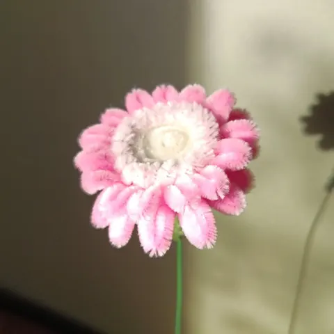

Les fleurs de l’atelier
Gerbera en fil chenille
Tout doux et plein de pétales, le gerbera est la fleur de la bonne humeur. Je le façonne en fil chenille avec un cœur bien rond et une couronne de pétales réguliers, en rose, en bleu, en blanc ou en jaune.
En images


Le gerbera en fil chenille
Tout doux et plein de pétales, le gerbera est la fleur de la bonne humeur. Je le façonne en fil chenille avec un cœur bien rond et une couronne de pétales réguliers, en rose, en bleu, en blanc ou en jaune.
C’est l’une des fleurs les plus minutieuses à réaliser : chaque petit pétale est formé puis fixé autour du cœur, un par un.
Le langage des fleurs
Le gerbera évoque la joie, la gaieté et l’optimisme : une fleur à offrir pour dire merci, pour encourager ou pour souhaiter une belle journée.

Dans mes créations
On le retrouve dans de nombreux bouquets colorés, comme le bouquet coloré, le bouquet soleil ou le bouquet rose tendre.
Bon à savoir
Un gerbera à l’unité est un joli cadeau de fin d’année pour la maîtresse : voir les idées.
Une fleur à l’unité coûte 8 €, et un bouquet 8 € par fleur, feuillage offert. Chaque création est emballée dans une pochette transparente fermée d’un nœud, avec sa carte de vœux offerte.